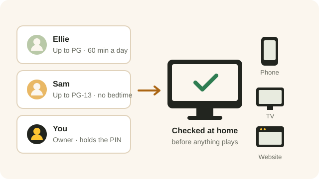

You decide what each person in your household can watch, and for how long. Beebo checks those limits everywhere, not just on the phone.
WHERE TO SET IT
On your PC, open Beebo and go to Users. Pick a person and set their limits there. On your phone, it is Owner tools, then Family & sharing.
Everyone in your household already has their own Beebo login. Parental controls are set on that person, so the same limits follow them onto the phone, the TV, the car and the website.
New to accounts? Start with Add & manage people.
PICK A STARTING POINT
Choose Young children (under 7), Ages 7 to 12, Teens (13 to 17) or Off. Each one sets a film rating and a TV rating for you. You can change anything afterwards.
Highest film rating. US ratings G, PG, PG-13, R and NC-17, or Canadian ratings G, PG, 14A, 18A and R.
Highest TV rating. TV-Y, TV-Y7, TV-G, TV-PG, TV-14 and TV-MA.
Hide titles with no rating. Home videos and anything Beebo could not match are hidden when you turn this on.
BLOCK WHAT YOU WANT
On top of the rating, you can block whole genres, single titles, or a collection. Or turn it around: Only titles I allow shows nothing except the titles you pick.

TIME
Give a person so many minutes a day, and hours when Beebo is closed — for example nothing between 9 at night and 7 in the morning. The daily count starts again at midnight.
Minutes are counted only while that person is actually watching something.
When the time is up, Beebo says so in a friendly line rather than an error, and tells the person when watching opens again.
OWNER PIN
Beebo asks for the PIN before anyone leaves a profile that has limits, moves to a profile with more access, or changes those limits on the device itself.
Five wrong tries lock the PIN for 15 minutes on that device.
Beebo does not keep the PIN itself, only a scrambled version of it, so nobody can read it back out of the app.

WHERE IT APPLIES
The limits are kept by the computer at home, so hiding a poster is not the whole story: a blocked title also refuses to play, even if someone knows exactly where to look.
It applies to every list and search, genre and actor filters, details pages, episode lists, cast, collections, Recently added, Surprise me, the watchlist, favourites, history, the shared queue, playlists, the website, casting to a TV, downloads and voice requests.
A restricted profile also can’t open the owner tools, Settings, trailers and look-it-up links, title requests, or Space Saver.
If you change a limit while someone is watching something they should no longer see, that stream stops within about a minute.
No. Beebo is not a children’s app and has no child-themed screens. Parental controls are a tool for the adult who runs the Beebo computer, to decide what the people in their household can watch.
From the title information Beebo fetches for your library. A title Beebo could not match has no rating at all, which is why there is a separate “hide titles with no rating” switch. See Posters & info.
No. The same check runs on the computer at home, so the website, the browser player, casting and downloads all follow the same limits.
Yes. The limits travel with the person’s login, so they apply on mobile data and at a friend’s place just as they do at home.
Set a new one from the Beebo app on your own PC, under Users.
No. Only minutes actually spent watching are counted towards a daily limit.